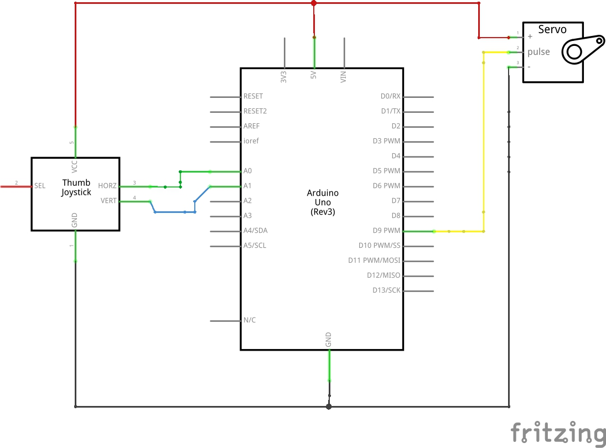

Courtney McKee's Assignment 5!
Here is all the documentation for assignment 5 which inlcudes the circuit board, schematic, a code snippet, and the circuit operation!!
Circuit
There is a joystick and servo that are both connected to the breadboard and arduino. The joystick controls which angle the servo will be at. The servo is connected to pin 9. The joystick x and y value are connected to pins A0 and A1.
Schematic

This is the schematic of the breadboard and arduino.
Code Snippet
This is the code that is making the servo move. In order to figure out the values for the joystick I printed the values to the serial monitor. Using these values I added about 50 to both sides to have a rough estimate of the location of the joystick. When the joystick was either up, down, left, or right it would change the degrees of the servo. Right was 30, up was 60, left was 90, down was 120, and if center 0.
Cicuit Operation

This is the operation of the board. When the joystick is moved the angle of the servo motor changes.